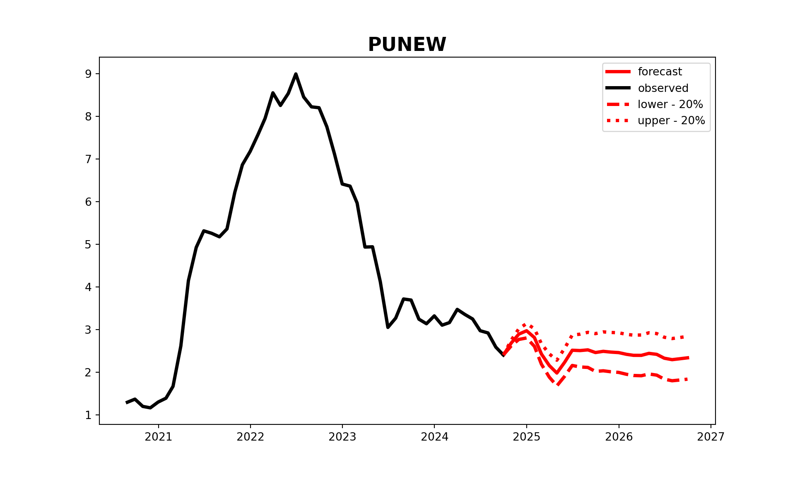

#from Functions import *
from scipy.interpolate import interp1d
import numpy as np
import matplotlib.pyplot as plt
import pandas as pd
import os
from datetime import datetime
import tkinter.filedialog
from datetime import timedelta
import math
import time
import calendar
from numba import jit
from sklearn.metrics import mean_squared_error
from statsmodels.tsa.api import VAR
import scipy
import statsmodels.tsa.stattools as ts
import statsmodels.tsa as tsa
import matplotlib.pyplot as plt
import numpy as np
import sklearn
from sklearn.metrics import mean_squared_error, r2_score
import statsmodels.api as sm
from datetime import datetime,timedelta
from statsmodels.tsa.stattools import adfuller
from numpy.linalg import cholesky
def Factor(Y, X_slow, n_factors, X_fast='None'):
#n_time = len(Y.index)
n_var = len(Y.columns)
if isinstance(X_fast,str)==True:
hist = Y.join(X_slow)
else:
hist = Y.join(X_slow).join(X_fast)
hist=hist.dropna(axis=0,how='any')
"step 1 - PCA on all observable variables"
x = np.mat(hist - hist.mean())
z = np.mat((hist - hist.mean())/hist.std())
D, V, S = calculate_pca(hist, n_factors + n_var)
Psi = np.mat(np.diag(np.diag(S - V.dot(D).dot(V.T))))
factors = V.T.dot(z.T).T
C = pd.DataFrame(data=factors, index=hist.index, columns=['C' + str(i+1) for i in range(n_factors+n_var)])
Loadings_C = calculate_factor_loadings(hist, C)
"step 2 - PCA on slow moving variables"
x = np.mat(X_slow-X_slow.mean())
z = np.mat((X_slow-X_slow.mean())/X_slow.std())
D, V, S = calculate_pca(X_slow, n_factors)
Psi = np.mat(np.diag(np.diag(S - V.dot(D).dot(V.T))))
factors = V.T.dot(z.T).T
F_minus = pd.DataFrame(data=factors, index=X_slow.index, columns=['F_minus' + str(i+1) for i in range(n_factors)])
Loadings_F_slow = calculate_factor_loadings(X_slow, F_minus)
"step 3 - C_t = b1*Y_t + b2*F_t"
X = Y.join(F_minus)
B = calculate_factor_loadings(C, X)
Lambda_y, Lambda_f = B[:,0:n_var], B[:,n_var:]
# F_t= Lambda_f^-1*(C_t-Lambda_y*Y_t)
F = Lambda_f.I.dot((np.mat(C).T - Lambda_y.dot(Y.T))).T
F = pd.DataFrame(data=F, index=X_slow.index, columns=['F' + str(i+1) for i in range(n_factors)])
return FactorResultsWrapper(C=C, Lambda_c=Loadings_C, F_minus=F_minus, F=F)
class FactorResultsWrapper():
def __init__(self, C, Lambda_c, F_minus, F):
self.C = C
self.Lambda_c = Lambda_c
self.F_minus = F_minus
self.F = F
def FAVAR(Factor, Y, lag):
hist = Y.join(Factor)
model=VAR(hist,missing='drop').fit(lag,trend='n')
return FAVARResultsWrapper(VAR=model)
class FAVARResultsWrapper():
def __init__(self, VAR):
self.VAR = VAR
def summary(self):
print(self.VAR.summary())
return
def predict(self, Factor, Y, step, freq='M', alpha=0.05):
hist = Y.join(Factor)
[forecast_mean,forecast_low,forecast_up] = self.VAR.forecast_interval(hist.values, step, alpha)
mean = np.concatenate((hist.values, forecast_mean), axis=0)
up = np.concatenate((hist.values, forecast_up), axis=0)
low = np.concatenate((hist.values, forecast_low), axis=0)
dates = pd.date_range(Y.index[0], periods=len(Y.index)+step,freq=freq)
mean = pd.DataFrame(data=mean[:,0:len(Y.columns)], columns=Y.columns.tolist(), index=dates)
low = pd.DataFrame(data=low[:,0:len(Y.columns)], columns=Y.columns.tolist(), index=dates)
up = pd.DataFrame(data=up[:,0:len(Y.columns)], columns=Y.columns.tolist(), index=dates)
return [mean,low,up]
def predict_plot(self, Factor, Y, step, freq='M', alpha=0.05, figure_size=[18,12],line_width=3.0,font_size='xx-large', actural='None'):
mean, low, up = self.predict(Factor, Y, step, freq, alpha)
n_var = len(mean.columns)
n_act = len(Y.index)
plt.rcParams['figure.figsize'] = (figure_size[0], figure_size[1])
plt.rcParams['lines.markersize'] = 6
plt.rcParams['image.cmap'] = 'gray'
for i in range(n_var):
plt.figure()
plt.plot(mean.index[n_act-1:],mean.iloc[n_act-1:,i],color='r',label='forecast', linewidth=line_width)
plt.plot(mean.index[:n_act],mean.iloc[:n_act,i],color='k',label='observed',linewidth=line_width)
plt.plot(mean.index[n_act-1:],low.iloc[n_act-1:,i],color='r', linestyle = '--', label='lower - '+str(int(100-alpha*100))+'%',linewidth=line_width)
plt.plot(mean.index[n_act-1:],up.iloc[n_act-1:,i],color='r', linestyle = ':', label='upper - '+str(int(100-alpha*100))+'%',linewidth=line_width)
plt.legend()
if isinstance(actural,str)!=True:
plt.plot(mean.index[n_act-1:],actural.iloc[:,i],color='k',label='observed', linewidth=line_width)
plt.title(mean.columns[i], fontweight='bold', fontsize=font_size)
#plt.xlabel('Date')
#plt.ylabel('Value')
plt.show()
returnFAVAR
Factor Augmented VAR for Inflation Forecasting in Python
Model, variable choice and variable transformation based on Bernanke (2005)
#from FactorAugmentedVAR import *
#from Functions import *
from datetime import *
import warnings
import pandas as pd
warnings.filterwarnings('ignore')
# Data Import
file_name ='favardata.xlsx'
sheet_name ='Sheet1'
Temp = pd.read_excel(file_name, sheet_name)
vintage_transformed = Temp.iloc[:,1:]
vintage_transformed.index = Temp.iloc[:,0]
#Data Interpolation
vintage_intrpl = DataInterpolation(vintage_transformed[1:], 0, len(vintage_transformed.index), 'slinear').dropna(axis=0,how='any')
# Factor Calculation
factor = Factor(Y=pd.DataFrame(vintage_intrpl.iloc[:,0]),
X_slow=vintage_intrpl.iloc[:,1:54],
n_factors=3,
X_fast=vintage_intrpl.iloc[:,54:])
factor.C.plot()
#factor.F.plot()
favar = FAVAR(Factor=factor.F, Y=pd.DataFrame(vintage_intrpl.iloc[:,0]), lag=12)
#favar.VAR.summary()
mean, low, up = favar.predict(Factor=factor.F[-12:], Y=pd.DataFrame(vintage_intrpl.iloc[-12:,0]), step=24)
favar.predict_plot(Factor=factor.F[-12:], Y=pd.DataFrame(vintage_intrpl.iloc[-50:,0]), step=24, freq='M', alpha=0.8, figure_size=[10,6],line_width=3.0,font_size='xx-large', actural='None')
forecast_results = pd.concat(
[mean, low.add_suffix('_lower'), up.add_suffix('_upper')],
axis=1
)
print(forecast_results) PUNEW PUNEW_lower PUNEW_upper
2023-10-31 3.245790 3.245790 3.245790
2023-11-30 3.139480 3.139480 3.139480
2023-12-31 3.323160 3.323160 3.323160
2024-01-31 3.105980 3.105980 3.105980
2024-02-29 3.165740 3.165740 3.165740
2024-03-31 3.475130 3.475130 3.475130
2024-04-30 3.357730 3.357730 3.357730
2024-05-31 3.250210 3.250210 3.250210
2024-06-30 2.975630 2.975630 2.975630
2024-07-31 2.923570 2.923570 2.923570
2024-08-31 2.591230 2.591230 2.591230
2024-09-30 2.407510 2.407510 2.407510
2024-10-31 2.686810 2.170789 3.202831
2024-11-30 2.895401 1.933582 3.857220
2024-12-31 2.975034 1.668058 4.282009
2025-01-31 2.815498 1.224082 4.406914
2025-02-28 2.428453 0.576025 4.280881
2025-03-31 2.160495 0.055971 4.265018
2025-04-30 1.984777 -0.338983 4.308536
2025-05-31 2.237862 -0.301316 4.777041
2025-06-30 2.518559 -0.240752 5.277871
2025-07-31 2.510632 -0.457399 5.478662
2025-08-31 2.527065 -0.653118 5.707249
2025-09-30 2.464574 -0.960135 5.889284
2025-10-31 2.492883 -1.031092 6.016857
2025-11-30 2.475002 -1.087530 6.037534
2025-12-31 2.463522 -1.124990 6.052035
2026-01-31 2.423201 -1.196655 6.043057
2026-02-28 2.399335 -1.255050 6.053721
2026-03-31 2.398461 -1.292710 6.089632
2026-04-30 2.445208 -1.285505 6.175920
2026-05-31 2.422288 -1.344430 6.189006
2026-06-30 2.331793 -1.463765 6.127352
2026-07-31 2.297906 -1.526559 6.122371
2026-08-31 2.319317 -1.533535 6.172169
2026-09-30 2.340866 -1.527665 6.209397